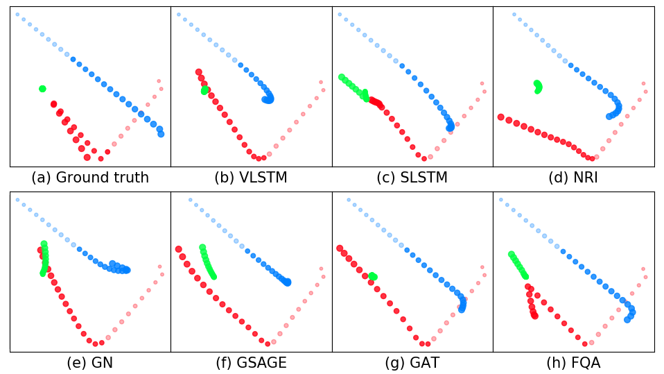
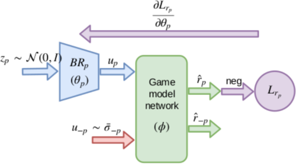
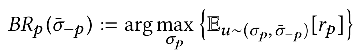
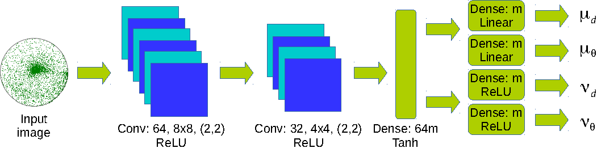
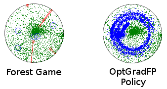
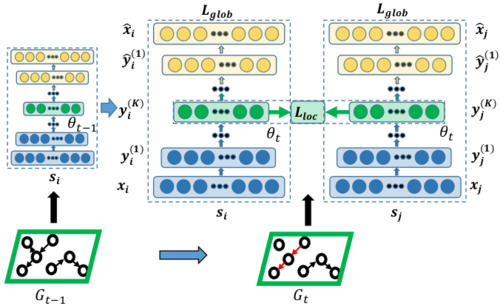
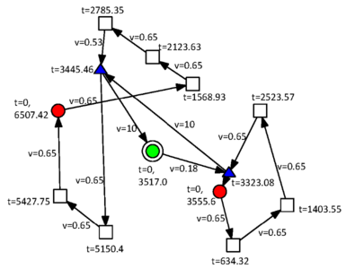
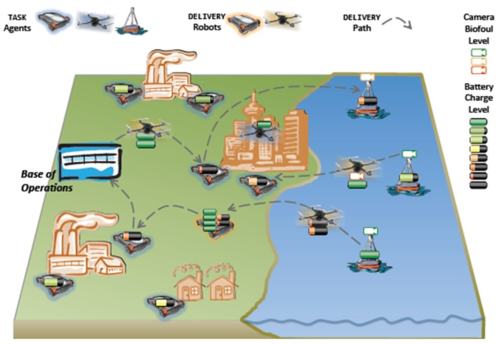

Publications

Where is the World Headed? Trajectory Prediction for Interacting Agents
We present a novel relational neural network model to address multi-agent trajectory prediction, which flexibly models interaction between agents by making fuzzy decisions and combining the corresponding responses with a fuzzy operator. Our approach shows significant performance gains over many existing state-of-the-art predictive models in diverse domains such as human crowd trajectories, US freeway traffic and physics datasets.
Nitin Kamra, Hao Zhu, Dweep Trivedi, Ming Zhang and Yan Liu
Southern California Machine Learning Symposium (SCMLS), 2020

DeepFP for Finding Nash Equilibrium in Continuous Action Spaces
We present DeepFP, an approximate extension of fictitious play in continuous action spaces. DeepFP represents players’ approximate best responses via highly expressive implicit density approximators and trains them with a model-based learning regime. We demonstrate stable convergence to Nash equilibrium on several classic games and in a forest security domain. DeepFP learns strategies robust to adversarial exploitation and scales well with players’ resources.
Nitin Kamra, Umang Gupta, Kai Wang, Fei Fang, Yan Liu and Milind Tambe
Conference on Decision and Game Theory for Security (GameSec), 2019

Deep Fictitious Play for Games with Continuous Action Spaces
We develop an approximate extension of fictitious play to two-player games with high-dimensional continuous action spaces.
Nitin Kamra, Umang Gupta, Kai Wang, Fei Fang, Yan Liu and Milind Tambe
18th International Conference on Autonomous Agents and Multiagent Systems (AAMAS), 2019

Deep Generative Dual Memory Network for Continual Learning
We derive inspiration from human complementary learning systems (hippocampus and neocortex) to develop a dual memory architecture capable of learning continuously from sequentially incoming tasks, while averting catastrophic forgetting. We perform memory consolidation via generative replay of past experiences and demonstrate improved retention on challenging tasks.
Nitin Kamra, Umang Gupta and Yan Liu
ArXiv, May 2018.

Policy Learning for Continuous Space Security Games using Neural Networks
We present OptGradFP, a novel and general algorithm that searches for optimal defender strategies, and can also be used to learn policies over multiple game states simultaneously in stackelberg security games with continuous action spaces. We demonstrate the potential to predict good defender strategies via experiments and analysis on discrete and continuous game settings.
Nitin Kamra, Umang Gupta, Fei Fang, Yan Liu and Milind Tambe
Thirty-Second AAAI Conference on Artificial Intelligence, February 2018

Handling Continuous Space Security Games with Neural Networks
We propose OptGradFP, a novel and general algorithm that searches for optimal defender strategies in stackelberg security games with continuous action spaces.
Nitin Kamra, Fei Fang, Debarun Kar, Yan Liu and Milind Tambe
IJCAI International Workshop on A.I. in Security (IWAISe), August 2017

DynGEM: Deep Embedding Method for Dynamic Graphs
We present DynGEM, an efficient algorithm based on a deep autoencoder which produces embeddings for graphs evolving over time, to perform graph visualization, link prediction and node classification etc. DynGEM: (a) produces stable embeddings over time, (b) can handle growing dynamic graphs, and (c) has better running time than using static embedding methods on each snapshot of a dynamic graph.
Nitin Kamra*, Palash Goyal*, Xinran He and Yan Liu
IJCAI International Workshop on Representation Learning for Graphs (ReLiG), August 2017

Combinatorial Problems in Multi-Robot Battery Exchange Systems
We present solutions to combinatorial problems in multi-robot systems characterized by task robots, which provide services at requested locations and delivery robots, which deliver batteries to task robots. Multiple resource scheduling and path planning problems, at least as hard as the m-TSP problem, are solved using heuristic algorithms inspired by techniques from approximation algorithms.
Nitin Kamra, T. K. Satish Kumar and Nora Ayanian
IEEE Transactions on Automation Science and Engineering (T-ASE), 2018

A mixed integer programming model for timed deliveries in multirobot systems
We address the scheduling problem arising when several deployed task robots perform long-duration missions and can request resources (e.g. batteries), which are to be delivered by delivery robots. We incorporate multiple incoming time-bound delivery requests, while permitting relaxed deliveries when available resources are scant and allowing dynamic re-routing of delivery robots. The problem is posed as a variant of the Vehicle Routing Problem with Time Windows, and solved as a Mixed Integer QP with a branch and bound based solver.
Nitin Kamra and Nora Ayanian
IEEE International Conference on Automation Science and Engineering (CASE), August 2015